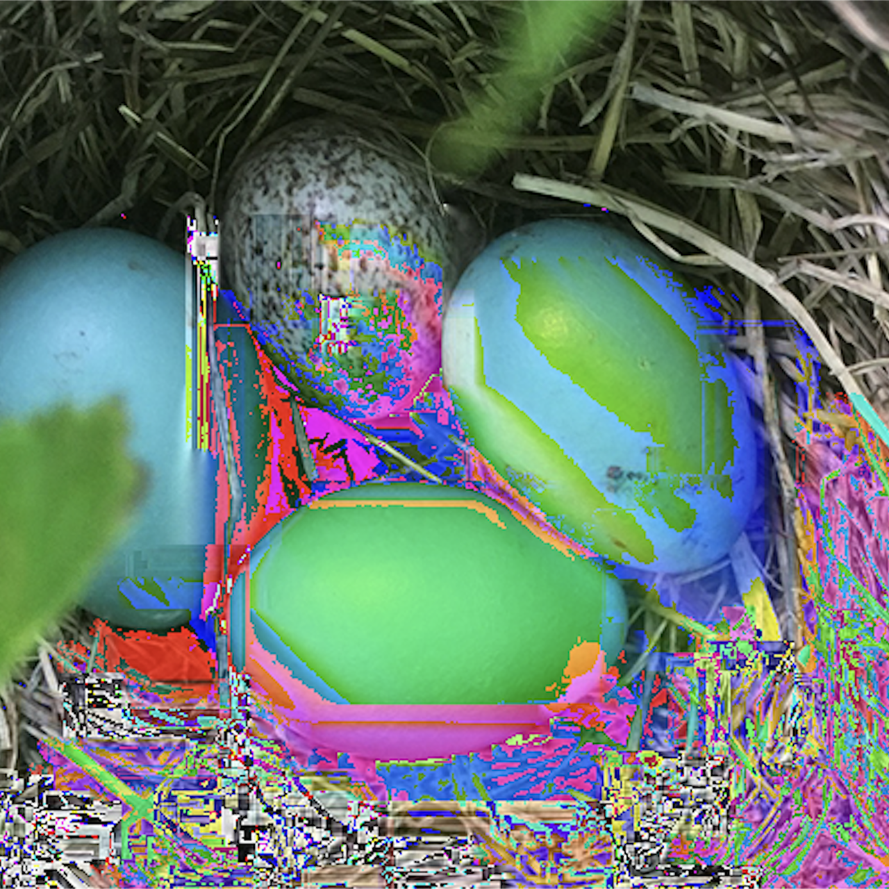
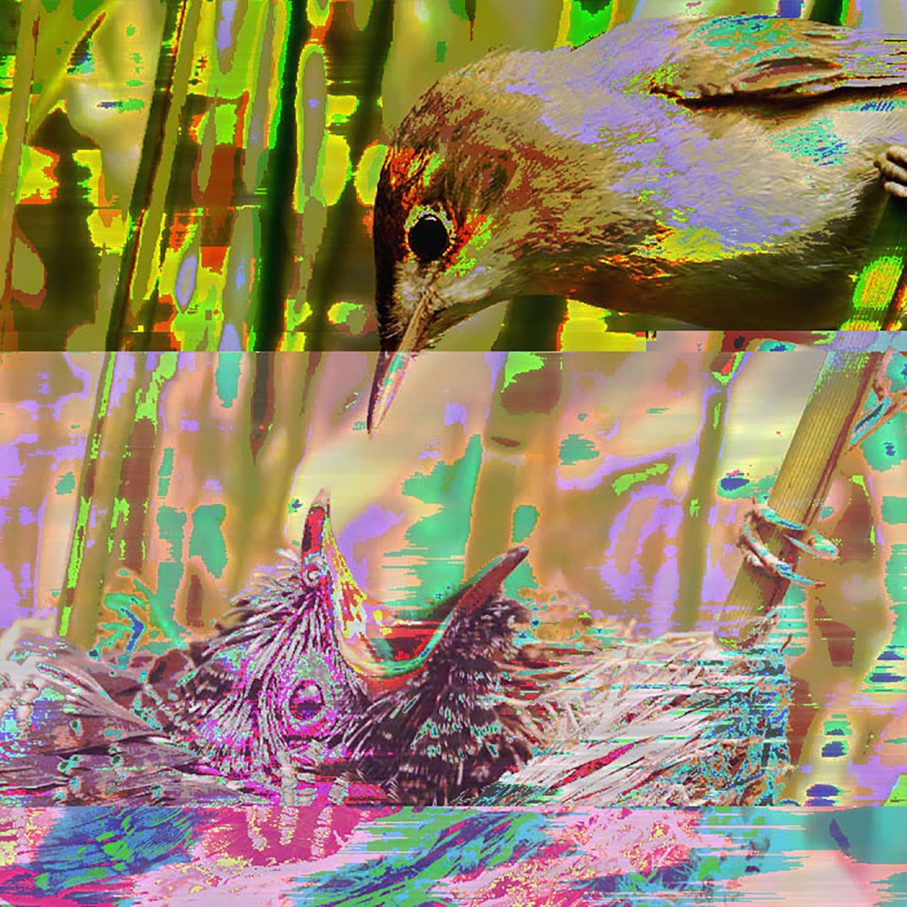

Glitch



This glitch series follows the story of a cuckoo bird, whose parasitic nature felt
fitting for the unsettling, distorted look of glitches. Cuckoos lay their eggs in other
birds’ nests, leaving them to raise their chicks. The chicks will push their nest
mates out of the nest for more of the resources. This was glitched using TextEdit and Audacity.
The first image depicts a parasitic egg, laid in another bird's nest. I used TextEdit to glitch
this image by typing random letters into the file's data. I wanted the distortion to be subtle,
so the original image can still be recognized, similar to how the host bird does not notice that
one of its eggs is slightly different. The glitch is a small indication that there is something
wrong.
The second image shows a freshly hatched cuckoo chick, pushing the other eggs out of the nest.
This image was glitched by importing the raw data into Audacity and applying effects onto it.
I used the fade in, fade out, tremolo, and echo effect on this image. The tremelo effect created
these horizontal lines across the image, which reminds me a bit of an old television, like we are
watching the chick push eggs out of the nest in slow motion.
The third image shows the cuckoo chick raised by its adoptive parents. This image was glitched
using a mix of TextEdit and Audacity. I first used TextEdit on it, which shifted the bottom half
of the colors to be red tinted, then imported the raw data into Audacity and applied the Notch
effect onto it. The colors on the bottom half, where the cuckoo chick is, are similar to the colors
in the first image, representing that the strange egg has taken over the nest.